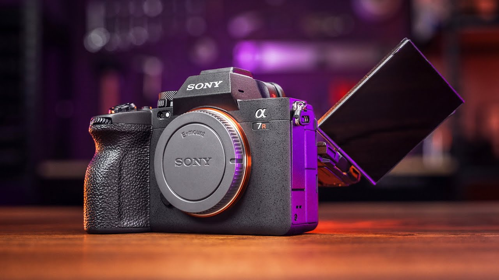

My Gears!
Here are the gears that I'm using whenenver I take some photos:
Nikon D5300
This is the only camera that I have right now; in fact, this camera is actually my father's. It's a decent camera for hobbyists, but not on the professional side. It has a 24.4 MP sensor, can shoot videos up to 1080p at 60 fps, and a Wide Viewing angle vari-angle TFT-LCD. As long as it does the job, I will keep using it.
Nikkor 18-55mm f3.5-5.6
This kit lens came with the D5300 as a bundle, just like its body; it's a pretty decent lens if you're using it for travel, family gatherings, hobbies, etc. I would not recommend this lens for professional work because of its f-stop or aperture.
Nikkor 70-300mm f4-5.6
I'm currently using this telephoto lens as my primary lens. It does the job well, but it suffers whenever I zoom it from 100 to 300mm. It lacks vibration reduction (VR). See my Gallery for sample photos; all of those pictures were taken with this lens except for one picture; guess which one.
Here are the gears that I wish I have right now: (Soon, maybe...)
Sony A7 Mark II
The Sony A7 Mark II is one of the best entry-level full-frame mirrorless cameras. It has the same 24.4MP sensor but in full frame, a better processor compared to my D5300, and in-body stabilization. Though even I want this camera, it lacks some features too, like a vari-angle touch screen, an extra SD Card slot, and updated technology like faster auto-focus. Nonetheless, it is still a good starter if you want to start in a better field of photography.
Sony A7R Mark V
The Sony A7R Mark V is one of the best top-of-the-line full-frame mirrorless cameras. It has a 61MP sensor, the best processor in the market equipped with a newly developed AI feature for real-time tracking, and can shoot videos up to 8K at 24 fps. It is one of the best full-frame mirrorless cameras that you can buy. This is my top pick for cameras.
E-Mount Prime Lenses like the 35mm, 50mm, and 85mm
To achieve that creamy bokeh or crisp and fast focus, it also requires better glasses. For me, these three prime lenses have the perfect amount of diameter with a fast aperture like f1.4 or at least f1.8. Though it costs a lot of money to afford brands like the G-Master or the Sigma (cheaper alternatives like Samyang, Viltrox, etc.), it's all worth it when you see the perfect outcome.